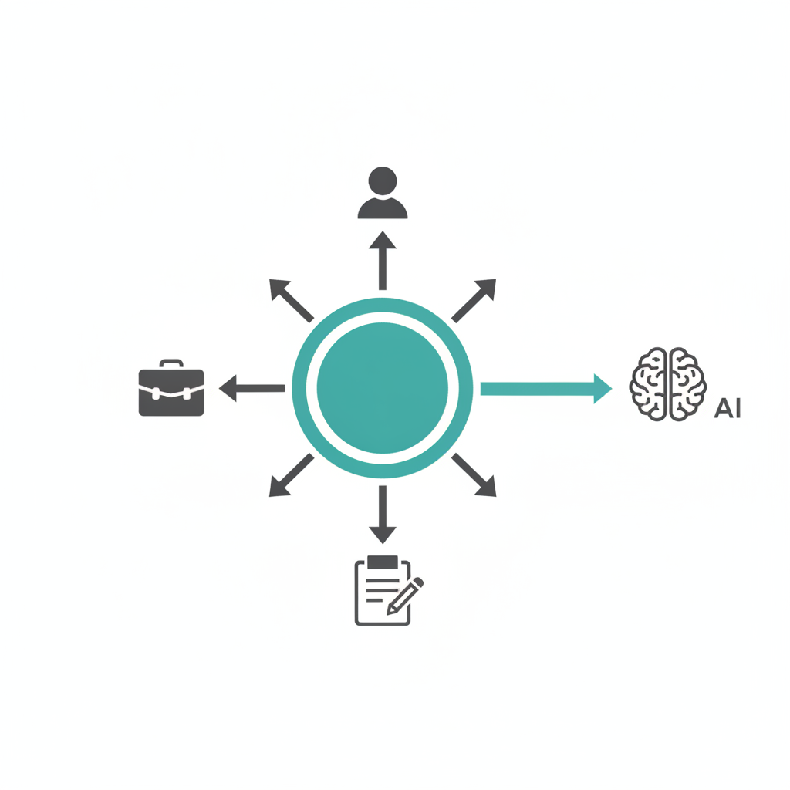
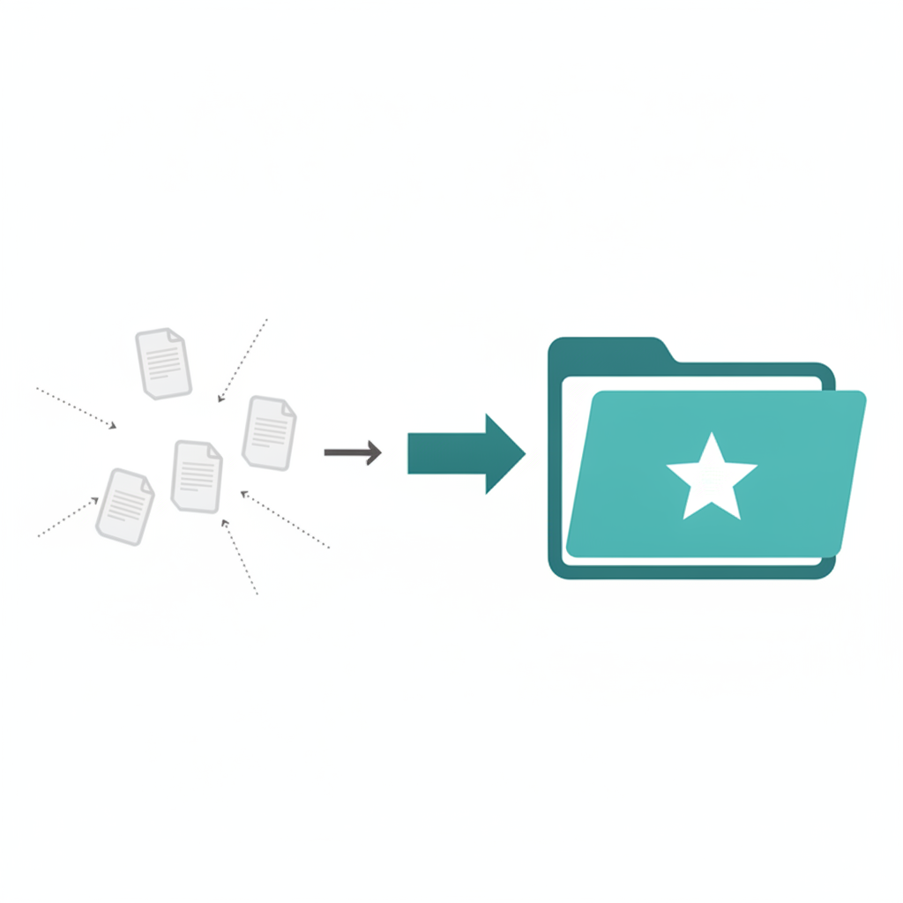
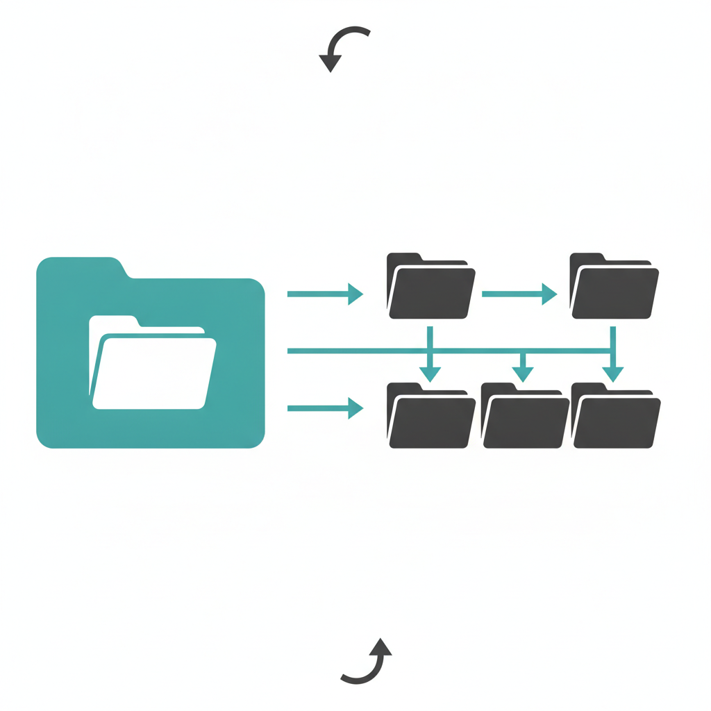

コンテキスト管理・フォルダ整理術
TODAY'S GOALS
今日のゴール
-
①
コンテキストの意味を押さえ、コンテキスト管理がなぜ必要かを自分の言葉で説明できる
-
②
SSOT（正本を1か所に決めるルール）の意味を押さえ、SSOTを守ることがなぜ必要かを自分の言葉で説明できる
-
③
60分の実践で、自分のコンテキスト（ファイル・メモなど）を実際に整理し始められる
TODAY'S AGENDA
今日のアジェンダ
-
第1章
なぜコンテキスト管理とSSOTが必要か（概念）
-
第2章
整理の手順（画面キャプチャで説明）
-
第3章
60分の実践（各自のPCで整理を始める）
CHAPTER
第1章：コンテキスト管理とSSOTの重要性
-
第1章
なぜコンテキスト管理とSSOTが必要か（概念）
-
第2章
整理の手順（画面キャプチャで説明）
-
第3章
60分の実践（各自のPCで整理を始める）
1-1. AIの裏側の仕組み
- ① 学習データ — ネット上の大量テキストが学習データとしてある
- ② トークン — 言葉をトークン（最小単位）に分解して処理
- ③ 出力 — 「次に来る可能性が高い言葉」をひたすら繰り返す
1-2. 何もしないと一般論になる
- あなた固有の背景を渡さなければ、AIは学習データ由来の定番の答えになりやすい。
1-3. コンテキストとは
- 事業 — 何の仕事か
- 顧客 — 誰のためか
- いまの目標 — 何を達成したいか
- 過去の決定・メモ — ファイル・LINE・頭の中の前提も含む
1-3b. コンテキストのイメージ
事業・顧客・目標・メモが中央のハブに集まり、AIへ渡されるイメージです。

1-3c. コンテキストの質

AIの答えの質は、渡すコンテキストの質で決まります
1-4. コンテキストエンジニアリング
- 渡すだけでは足りない。整理して、必要な分だけAIに渡すこと。これを コンテキストエンジニアリング と言います。
1-5. SSOT — なぜ必要か
- コンテキストウィンドウ — AIが一度に読める文字数には限りがある
- ファイルが増える — 同じ内容のコピーが散らばると、どれが最新か分からなくなる
- だから正本を1か所に — 渡す材料をはっきりさせる土台が SSOT
1-5b. SSOTのイメージ
散らばった書類を、1つの正本フォルダに集めるイメージです。

1-5c. SSOTの定義
正本を1か所に決める。それがSSOTです
CHAPTER
第2章：コンテキスト整理の手順
-
第1章
なぜコンテキスト管理とSSOTが必要か（概念）
-
第2章
整理の手順（画面キャプチャで説明）
-
第3章
60分の実践（各自のPCで整理を始める）
2-1. フォルダ構造を確認する
- まず アスキーアート でフォルダ構造を出し、どこに何があるか を全体で見渡します。
2-1b. フォルダ構造のイメージ
※ 本番では Cursor のアスキーアート画面キャプチャに差し替えてください。

2-2. SSOT違反を確認する
- 同じ内容が2か所以上にある
- どれが最新か説明できない
- 正本の置き場をまだ決めていない情報がある
2-3. 正本を決めて整理する
- 違反があれば、正本の置き場を1つ決め、そこに集約します。重複は統合し、古いコピーは削除します。
CHAPTER
第3章：実践（60分）
-
第1章
なぜコンテキスト管理とSSOTが必要か（概念）
-
第2章
整理の手順（画面キャプチャで説明）
-
第3章
60分の実践（各自のPCで整理を始める）
3-1. チェックリスト
- アスキーアートでフォルダ構造を確認した
- SSOT違反を1つ以上見つけた
- 正本の置き場を1つ決めた（あとから変えてよい）
- 重複を統合した、または古いコピーを削除した
- 分からないことがあれば質問した
3-2. 実践時の注意点
- 完璧に整理しなくてよい — 1テーマ・違反1つ直せればOK
- 一度に全部やらない — フォルダ全体ではなく、いま困っている情報から
- AIの出力はそのまま信じない — 整理中も最終判断は人が行う
- 正本を決めたら古いコピーは削除 or 統合 — 残すとまた違反になる
- あとから変える前提で、この場で置き場を決め切る — 永久に正しい形を探さない
3-3. 本日のまとめ
- AI — 知っているように見えるが、言葉を理解しているわけではない
- 一般論 — 背景を渡さないと定番の答えになりやすい
- コンテキスト — あなたの背景情報をAIに渡す
- コンテキストエンジニアリング — 整理して、必要な分だけ渡す
- SSOT — 正本を1か所に決める